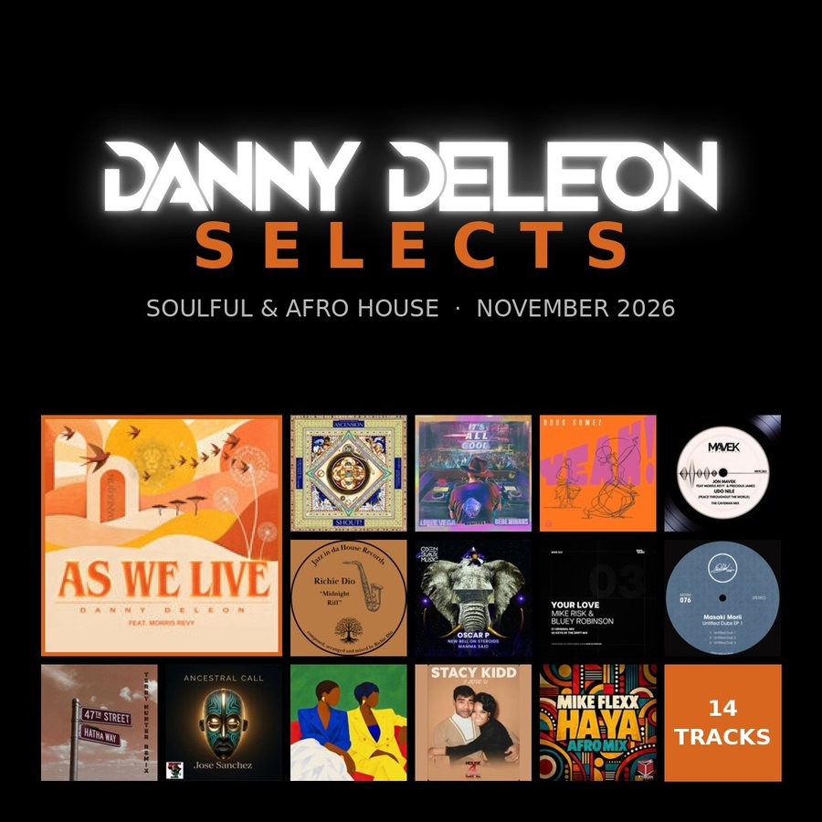

New · Monthly DJ chartDanny Deleon Selects · November 2026 See the chart →DJ · Producer · New York City
Danny
Deleon
Afro, Soulful and Deep House from New York. Founder of Dandelion Musica.
- Since 2012Behind the decks
- Since 2021Producing
- #9Traxsource Afro House · Shine (Richie Dio Remix)
- MonthlyNew releases on Dandelion Musica
Music
Original records and remixes, released on Dandelion Musica.
Live sets
Full DJ sets from New York nights. Press play and hear how a Danny Deleon set moves.
About
Danny Deleon has been behind the decks since 2012, coming up in New York's house scene and building sets that move between Afro percussion, soulful vocals and deep, rolling basslines.
In 2021 he started producing his own records, and in 2024 he founded Dandelion Musica, an independent label for Soulful, Afro, Deep, Latin and Tech House. His releases and remixes sell on Traxsource and Beatport, and Shine (Richie Dio Remix) reached #9 on Traxsource's Afro House chart on pre-order.
He releases new music every month and plays across New York, from club nights to open-air and cultural celebrations.
- Afro House
- Soulful House
- Deep House
- Latin House
- Tech House
Selected sets
- Disco Tek NYCBrooklyn, NY · Live set
- Rare Form UndergroundGuest set
- Dominican Independence Daywith LGG Events
- Invasion Society / Afrodose x iBoatNew York
Press kit
Photos and bio for promoters, venues and press. Click a photo to open the full size.
Short bio
Danny Deleon is a New York DJ and producer working the warm side of house music: Afro, Soulful, Deep and Latin grooves built for the dancefloor.
Bookings
Book Danny Deleon
Clubs, festivals, private events and cultural celebrations. Send the date, venue, city and set length, and you'll hear back fast.
New music, first
One email when Danny drops something new. No spam.